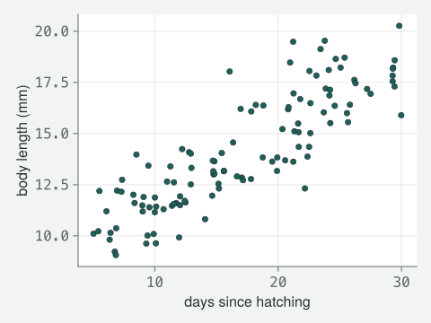
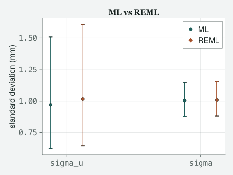
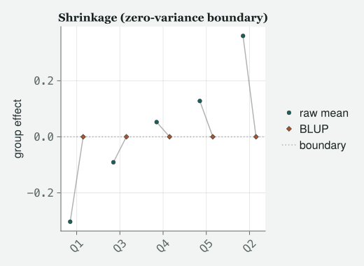
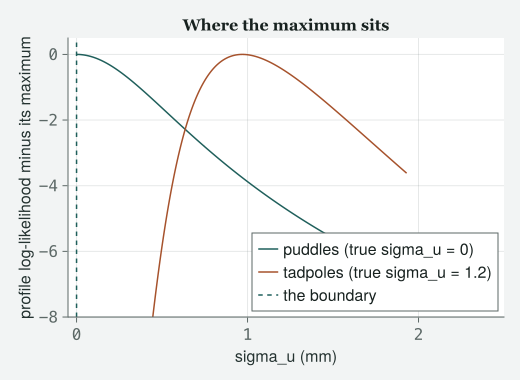
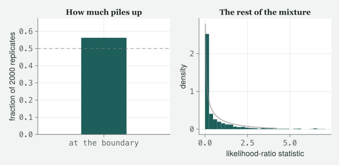

Two correct implementations of one mixed model print different variance components, and nobody in the room chose which one they were reading.
Draft
All ten classes of version 1 run from start to finish, with Appendix A, the preface and the coda. Every number and figure on this page comes out of code that was run to make the page. The writing is still a draft.
Engines DRM.jl 0.7.1 (Julia 1.10.0) · drmTMB 0.7.0 (R 4.6.0) Provenance Every block of Julia on this page was run, and its output printed, when the page was made. No output is pasted in from memory. The one block of R output was run once by hand, on 2026-09-06, on the tadpole file this chapter writes, and is labelled as such where it appears. Caveat No real pond file exists yet, so the data are simulated from a stated seed inside the first cell and written to data/ch8/. Swap in real tadpoles and every number changes; the sentences around them do not.
A note on the data. There is no real pond file yet. Momo’s tadpoles are simulated from a stated seed in the first cell below, and the cell writes them to data/ch8/tadpoles.csv, so you can open the same file yourself. The two smaller datasets later in the class are simulated the same way, each from its own stated seed, with the pond effect deliberately switched off, and are written beside it. Swap in a real file and every number in this chapter changes; not one sentence around them does.
Objectives
By the end of this class you should be able to:
Say what REML restricts, and why restricting it changes the variance components but barely moves the fixed effects.
Recognise the divisor argument from Class 2 in its grown-up form, and say why it no longer collapses to one clean divisor once there are two variance components.
Explain why an estimated variance of exactly zero is not a bug, and what a likelihood-ratio test is doing wrong when it tests one.
Say why the usual chi-squared reference is the wrong one when the thing being tested is a variance that cannot go below zero, use the corrected test the engine provides, and say what the uncorrected test costs you.
Name the estimator every time you report a variance component, because the software will not name it for you.
The class
Itchy’s office, 9:00 am, and there is a fourth chair. JARO is a
statistician from the floor below who appears in the weeks where the
arithmetic gets sharp. He has brought his own coffee and no laptop. MOMO
is already halfway through a sentence. TOTO is writing down the
sentence.
Momo
I fitted the pond model twice.
Itchy
Go on.
Momo
Once the way you showed us in Class 6, and once with one extra keyword I
found in the documentation. Same data, same formula, same engine. The
pond standard deviation came out different.
Itchy
How different?
Momo
Not dramatically. Enough that I would have written a different number in
a paper.
Itchy
(puts down the pen) Right. Everything else waits. This is the
chapter.
Jaro
May I say the short version first, so they know where we are going?
Itchy
Please.
Jaro
There are two standard ways to estimate a variance component. Both are
correct. They answer slightly different questions, they give different
numbers on small data, and every package picks one for you and prints it
without a label. Momo did not choose a default. She inherited one.
Toto
Which one is right?
Jaro
That is the wrong question and you will stop asking it by eleven
o’clock.
The tadpoles, again
Itchy
Same notation as Class 6, so nothing new to learn before we start.
Tadpole i in pond j. β0 the intercept, β1 the slope on
days since hatching, u_j the pond nudge, σ_u the spread of those nudges,
σ the spread within a pond. And repeatability, the thing you actually
wanted:
R = σ_u² / (σ_u² + σ²). Not a coefficient of μ, not a p-value: a
ratio of two things we are about to argue about, over a sum of the same
two.
Itchy
Load them. And read the caveat at the top of the page: these tadpoles
are simulated, because the real pond file does not exist yet.
include("../tools/figures.jl")usingDRM, DataFrames, Random, Statistics, LinearAlgebra, Printf, Logging, CairoMakieset_theme!(theme_itchy(:light))"""Simulate J ponds of `per` tadpoles each: body length on days since hatching."""functionsimulate_ponds(seed; J =12, sigma_u =1.2, sigma =1.0, per =8:12) rng =MersenneTwister(seed) u = sigma_u .*randn(rng, J) pond =String[]; days =Float64[]; body =Float64[]for j in1:J, _ in1:rand(rng, per) d =round(5+25*rand(rng), digits =2)push!(pond, "P"*lpad(j, ndigits(J), '0'))push!(days, d)push!(body, round(8.0+0.35* d + u[j] + sigma *randn(rng), digits =3))endDataFrame(pond = pond, days = days, length = body)endfunctionwrite_csv(df, path)mkpath(dirname(path))open(path, "w") do ioprintln(io, join(names(df), ","))for r ineachrow(df)println(io, r.pond, ",", r.days, ",", r.length)endendreturn pathendtadpoles =simulate_ponds(808)write_csv(tadpoles, "../data/ch8/tadpoles.csv")println("rows, columns: ", size(tadpoles))println("ponds: ", length(unique(tadpoles.pond)))println("tadpoles per pond: ",extrema(combine(groupby(tadpoles, :pond), nrow =>:n).n))first(tadpoles, 5)
Which is the only reason you will be able to see today’s effect at all.
And notice which thing is small. Twelve ponds, not a hundred
and seventeen tadpoles. Hold that distinction rather than believing me
about it, because in twenty minutes I am going to make you test it.
fig_data_cloud(tadpoles.days, tadpoles.length; xlabel ="days since hatching", ylabel ="body length (mm)")

Figure 1: Raw scatter of the simulated tadpoles, body length against days since hatching, all twelve ponds pooled into one cloud with no pond nudge drawn in yet. The vertical spread at any one age is the sum of two things — a between-pond spread and a within-pond one — that the rest of the chapter pulls apart.
Itchy
A line through it, plus twelve vertical nudges you cannot see yet. Fit
it twice.
Two fits
form =bf(@formula(length ~ days + (1|pond)))fit_ml =drm(form, Gaussian(); data = tadpoles)fit_reml =drm(form, Gaussian(); data = tadpoles, method =:REML)println(fit_ml)println(fit_reml)
Because it has two. The one it maximised, and the ordinary one evaluated
at the answer it reached. Keep them apart in your head; by the end of
the class you will know exactly one thing you are allowed to do with the
first of them.
Itchy
Now put the numbers side by side, and look at which rows move.
The two fixed-effect rows are basically one. The two variance rows are
not. And repeatability moved with them.
Itchy
That is the finding, and it is the finding every time. REML
leaves the fixed effects where they were and lifts the variance
components. If you report a slope, this chapter barely touches
you. If you report a variance component, a repeatability, an intraclass
correlation, or a heritability, this chapter is the difference between
two papers.
Momo
Lifts them. Always up?
Jaro
For this model, yes, and for a reason you already know. Ask Itchy about
Class 2.
The divisor, grown up
Itchy
Class 2, the box at the end. R’s lm and our engine
disagreed about the residual standard deviation, and the mechanism was a
divisor. Maximum likelihood divides the squared residuals by n.
The unbiased estimator divides by n − p, where p is
the number of fixed effects you had to estimate before you could look at
a residual.
Toto
Because you spent some of the data working out where the line was.
Itchy
Because you spent some of the data working out where the line was. That
is the whole idea, and it is worth saying that the idea is older than
any of this software; it is why your first statistics course divided by
n − 1 when it estimated one mean. REML is that argument,
applied to the variance components instead of the residual.
Jaro
More precisely. Take differences between data points chosen so that the
intercept and the slope cancel out of them; statisticians call those
contrasts, and it is a different use of the word from the treatment
contrasts of Class 2. REML fits the variance components to those
differences alone. The fixed effects are gone before the likelihood is
written down, so they cannot be estimated twice, and the variance
estimate is not shrunk by the cost of having estimated them. The name is
honest: restricted maximum likelihood. The restriction is that the fixed
effects have been taken out first.
Momo
So I can predict the ratio. It should be n over n − p.
Jaro
For the residual, yes. There are two levels here, so there are two
divisors. One symbol before you read the cell: call τ the ratio σ_u over
σ, how big the pond spread is compared with the within-pond spread.
Everything else in the fit follows from τ, so it is the one dial the two
estimators set differently. Print both divisors, and print the identity
that ties them together.
n =nrow(tadpoles)J =length(unique(tadpoles.pond))p =2# intercept and slope# tau = sigma_u / sigma is the model's one shape parameter. Given tau, beta comes# from generalised least squares (ordinary least squares with the pond correlation# built in) and sigma^2 in closed form, so the whole fit hangs off it. q(tau) is# the residual sum of squares weighted by that correlation, r' H(tau)^-1 r.functionqform(df, tau) y = df.length X = [ones(length(y)) df.days] g =sort(unique(df.pond)) Z =Float64[df.pond[i] == g[j] for i ineachindex(y), j ineachindex(g)] H = I + tau^2* (Z * Z') Hi =inv(H) b = (X'* Hi * X) \ (X'* Hi * y) r = y - X * breturn r'* Hi * rendtau_ml, tau_re = su_ml / s_ml, su_re / s_req_ratio =qform(tadpoles, tau_re) /qform(tadpoles, tau_ml)@printf("n = %d, J = %d, p = %d\n\n", n, J, p)@printf("%-24s %12s %12s\n", "", "observed", "its divisor")@printf("%-24s %12.6f %12.6f\n", "sigma^2 REML / ML", (s_re / s_ml)^2, n / (n - p))@printf("%-24s %12.6f %12.6f\n\n", "sigma_u^2 REML / ML", (su_re / su_ml)^2, J / (J -1))println("the identity, one level at a time:")@printf(" sigma^2 ratio = n/(n-p) * q(tau_R)/q(tau_ML) = %.6f * %.6f = %.6f\n", n / (n - p), q_ratio, (n / (n - p)) * q_ratio)@printf(" sigma_u^2 ratio = (tau_R/tau_ML)^2 * sigma^2 ratio = %.6f * %.6f = %.6f\n", (tau_re / tau_ml)^2, (s_re / s_ml)^2, (tau_re / tau_ml)^2* (s_re / s_ml)^2)@printf(" and (tau_R/tau_ML)^2 = %.6f, against J/(J-1) = %.6f\n", (tau_re / tau_ml)^2, J / (J -1))
n = 117, J = 12, p = 2
observed its divisor
sigma^2 REML / ML 1.009648 1.017391
sigma_u^2 REML / ML 1.099680 1.090909
the identity, one level at a time:
sigma^2 ratio = n/(n-p) * q(tau_R)/q(tau_ML) = 1.017391 * 0.992389 = 1.009648
sigma_u^2 ratio = (tau_R/tau_ML)^2 * sigma^2 ratio = 1.089172 * 1.009648 = 1.099680
and (tau_R/tau_ML)^2 = 1.089172, against J/(J-1) = 1.090909
Momo
Neither line lands on its divisor — the residual sits below n
over n − p, and the pond line above J over J −
1.
Jaro
Both misses are accounted for, and neither divisor is a guess. Take them
one at a time. The residual ratio is n over n − p
multiplied by a small factor, and that factor is only there because the
two fits sit at slightly different values of τ. Fix τ and the residual
divisor is exactly n over n − p, which is Class 2
unchanged. Then the pond ratio is the residual ratio again, multiplied
by how much τ itself moved, and that second factor is heading for
J over J − 1. It has not arrived yet, on a hundred and
seventeen tadpoles.
Toto
So the Class 2 argument did generalise.
Jaro
It generalised exactly, and it generalised per level.
One divisor for the rows, one for the groups, and the number you see
printed is their product. What Class 2 could not tell you is that the
two levels have different denominators, so the correction lands almost
entirely on whichever level has fewer units. Here that is the ponds, by
a factor of ten.
Momo
Then more tadpoles will fix it.
Jaro
Test that rather than believing either of us. Grow the rows with the
ponds held at twelve, then grow the ponds.
"""Refit both estimators on one dataset; return n, J and the two variance ratios."""functionratios(df) a =drm(form, Gaussian(); data = df) b =drm(form, Gaussian(); data = df, method =:REML)return (nrow(df), length(unique(df.pond)), (re_sd(b)[:pond] /re_sd(a)[:pond])^2, (first(sigma(b)) /first(sigma(a)))^2)end@printf("%-28s %6s %5s %11s %11s %11s\n","", "n", "J", "sigma_u^2", "sigma^2", "J/(J-1)")for per in (8:12, 80:120, 800:1200) nn, JJ, su2, s2 =ratios(simulate_ponds(808; J =12, per = per))@printf("%-28s %6d %5d %11.5f %11.5f %11.5f\n","more tadpoles, 12 ponds", nn, JJ, su2, s2, JJ / (JJ -1))endfor J0 in (12, 60, 300) nn, JJ, su2, s2 =ratios(simulate_ponds(808; J = J0))@printf("%-28s %6d %5d %11.5f %11.5f %11.5f\n","more ponds, same pond sizes", nn, JJ, su2, s2, JJ / (JJ -1))end
n J sigma_u^2 sigma^2 J/(J-1)
more tadpoles, 12 ponds 117 12 1.09968 1.00965 1.09091
more tadpoles, 12 ponds 1176 12 1.09178 1.00086 1.09091
more tadpoles, 12 ponds 11758 12 1.09100 1.00009 1.09091
more ponds, same pond sizes 117 12 1.09968 1.00965 1.09091
more ponds, same pond sizes 605 60 1.01808 1.00183 1.01695
more ponds, same pond sizes 3028 300 1.00361 1.00036 1.00334
Momo
The first block barely moves.
Jaro
The first block barely moves, and that is the sentence I would like you
to leave with. Ten thousand tadpoles in twelve ponds does not close the
gap in the pond variance. It closes the gap in the residual variance,
which was never the problem, and it walks the pond ratio down onto
J over J − 1 and stops there, because J is
still twelve. The second block is the one that closes it, and the only
thing that changed is the number of ponds.
Toto
Rows do not buy you a variance component.
Jaro
Rows do not buy you a variance component. Groups buy you a variance
component. Write that above your desk, because it is also the answer to
“how many samples do I need”, the question everybody asks with the wrong
noun in it.
Itchy
And on five ponds, which is a completely ordinary field season, it
matters a great deal. We are going to look at five ponds shortly.
# confint() reports the resd and sigma blocks on the log scale, so exponentiate# the endpoints to get an interval for the standard deviation itself.functionsd_intervals(fit) rows =confint(fit)pick(sym, nm) =only(filter(r -> r.param === sym && r.coef == nm, rows)) u =pick(:resd, "pond") s =pick(:sigma, "(Intercept)")return ((exp(u.lower), exp(u.upper)), (exp(s.lower), exp(s.upper)))endciu_ml, cis_ml =sd_intervals(fit_ml)ciu_re, cis_re =sd_intervals(fit_reml)fig_varcomp(["sigma_u", "sigma"], [su_ml, s_ml], [ciu_ml, cis_ml], [su_re, s_re], [ciu_re, cis_re]; ylabel ="standard deviation (mm)")

Figure 2: Sigma_u and sigma estimated twice on the same pond data, circles for ML and diamonds for REML, each with its interval (estimate plus or minus about two standard errors, the Wald interval) on the millimetre scale. The two sigma_u point estimates sit apart in a direction that repeats every time the chapter checks it, while their intervals overlap almost completely.
Momo
The intervals overlap almost completely.
Itchy
They do, and that is the second half of the lesson. The difference
between ML and REML here is much smaller than the uncertainty in either.
It still matters, because a point estimate is what goes in the abstract,
and because the difference is systematic while the
uncertainty is not. Momo, do not take “systematic” on my word either.
Forty fresh datasets, both estimators, count the sign.
"""Refit `nrep` fresh tadpole datasets both ways; count how often REML sits above ML."""functionreml_above_ml(nrep; start =2001) up =0for seed in start:(start + nrep -1) d =simulate_ponds(seed) a =drm(form, Gaussian(); data = d) b =drm(form, Gaussian(); data = d, method =:REML)re_sd(b)[:pond] >re_sd(a)[:pond] && (up +=1)endreturn upend@printf("REML sigma_u above ML on %d of 40 fresh datasets\n", reml_above_ml(40))
REML sigma_u above ML on 40 of 40 fresh datasets
Toto
All of them.
Itchy
All of them, which is what “systematic” means and what an overlapping
interval cannot tell you. One more thing before we move on, and it is
the sharpest form of today’s argument. Look back at the repeatability
row in the table.
Momo
It crosses one half.
Itchy
It crosses one half. On this dataset ML says the ponds account for
slightly less than half the spread and REML says slightly more, and the
only thing that changed is a keyword neither of you typed. Nobody would
publish “slightly less than half”; they would publish “less than half”,
and they would be describing their software.
What the ponds are doing meanwhile
Itchy
Before we get to the hard part, look at the pond effects themselves,
because you will need to trust them in Class 10.
blups =ranef(fit_ml)[:pond] # the model's prediction for each pond (the BLUPs), straight from the fitgroups =sort(unique(tadpoles.pond))# The unshrunk pond effect: the average residual from the fixed part, by pond.# fitted() here is MARGINAL (population level, X*beta with no pond effect), which# is exactly what we want to average within a pond. lme4's fitted() is not.resid_fixed = tadpoles.length .-fitted(fit_ml)raw = [mean(resid_fixed[tadpoles.pond .== g]) for g in groups]nj = [count(==(g), tadpoles.pond) for g in groups]@printf("%-6s %5s %9s %9s %9s %11s\n","pond", "n_j", "raw", "BLUP", "kept", "moved (mm)")for i ineachindex(groups)@printf("%-6s %5d %9.3f %9.3f %9.3f %11.3f\n", groups[i], nj[i], raw[i], blups[i], blups[i] / raw[i], abs(raw[i] - blups[i]))endfig_shrinkage(groups, raw, blups)
Figure 3: Shrinkage caterpillar for the twelve ponds under ML: circles are each pond’s own average residual from the fit’s marginal fitted values, diamonds are the model’s own prediction for the same pond, the BLUP of Class 6. Every pond moves toward zero, and the pond that travels furthest is the one that started furthest out, not the one with the fewest tadpoles.
Momo
Before you explain that: I would have written the same two lines in R
and got a different raw.
Itchy
You would, and this is worth ten seconds because it is the same failure
as everything else today. fitted and residuals
on our fit are marginal: they are the population-level
prediction, the fixed part alone, with every pond effect set to zero.
lme4 gives you the conditional version by
default, the fixed part plus the model’s own prediction for that group,
the BLUP of Class 6, already added in. So our residuals still carry the
pond signal, which is precisely why averaging them by pond gives the
unshrunk pond effect, and R’s would have that signal removed already.
Neither is wrong. Ask which one you are holding before you average
anything.
Toto
Every pond moved towards the middle, and the ponds with fewer tadpoles
kept the smallest fraction of what they started with.
Itchy
Both halves of that are right, and they are two different statements, so
keep them apart. Read the kept column against
n_j: the fraction a pond keeps depends on how many tadpoles
vouch for it. Now read the moved column instead, in
millimetres. The pond that travels furthest is not the pond with the
fewest tadpoles; it is the pond that started furthest from zero, because
distance travelled is the fraction lost multiplied by how far out you
were.
Momo
So a plot of the fractions and a plot of the distances tell different
stories.
Itchy
They tell different stories and referees routinely confuse them. The
picture in front of you is distances. Hold on to it, because in ten
minutes we will meet a dataset where every one of those diamonds sits on
exactly the same line, and I will draw you that picture too, and it will
not be a bug.
The boundary
Itchy
New data. Five ponds this time, fewer tadpoles, and I have switched the
pond effect off in the simulation. The ponds are genuinely alike.
"""Simulate J small ponds with NO pond effect: sigma_u is truly zero."""functionsimulate_flat_ponds(seed; J =5) rng =MersenneTwister(seed) pond =String[]; days =Float64[]; body =Float64[]for j in1:J, _ in1:rand(rng, 6:9) d =round(5+25*rand(rng), digits =2)push!(pond, "Q$j")push!(days, d)push!(body, round(8.0+0.35* d +randn(rng), digits =3))endDataFrame(pond = pond, days = days, length = body)endpuddles =simulate_flat_ponds(3)write_csv(puddles, "../data/ch8/puddles.csv")println("rows, columns: ", size(puddles))println("ponds: ", length(unique(puddles.pond)))fit_b_full =drm(bf(@formula(length ~ days + (1|pond))), Gaussian(); data = puddles)fit_b_red =drm(bf(@formula(length ~ days)), Gaussian(); data = puddles)println("\nsigma_u = ", re_sd(fit_b_full)[:pond])println(fit_b_full)
rows, columns: (35, 3)
ponds: 5
┌ Warning: Hessian is numerically singular at the optimum — using a pseudo-inverse.
│ The fit is at a variance/dispersion boundary, so standard errors for the
│ flagged coordinates are NOT trustworthy. Prefer `confint(fit, method = :profile)`
│ or the bootstrap entry points for those targets.
│ context = ""
│ flat_coordinates =
│ 1-element Vector{Int64}:
│ 4
│ rcond = 3.1022761224411406e-20
You did not break it. Two things are printed there that look like
failure and are not. The warning says the likelihood has no proper peak
here, only an edge: Hessian is the name for the curvature at the peak,
and there is none, so the standard errors for that one number are not to
be trusted. If a line at the bottom of a warning names a file inside the
engine, that line is for the engine’s authors, not for you. And “NOT
converged” in the fit’s first line is the optimiser saying it stopped at
a wall rather than on a hilltop. Now look at the resd line
the fit printed. Both that line and the sigma: line above
it are printed on the log scale, so resd
is log σ_u, and the optimiser has walked it off to minus something
enormous, which is how a computer says zero. The estimate is at the edge
of the space it is allowed to live in, because a standard deviation
cannot be negative.
Momo
But the true value is zero, so it got the right answer.
Jaro
It got the right answer for a reason you should not be comfortable with.
When the truth is zero, the estimate cannot scatter symmetrically around
it. Half of the draws that would have gone negative pile up at zero
instead. That pile is not a rounding artefact. It is a lump of
probability sitting on the boundary, and every test you were taught
assumes there is no such lump.
Itchy
And here is the picture I promised you ten minutes ago. Same
caterpillar, same code, this dataset.
b_blups =ranef(fit_b_full)[:pond]b_groups =sort(unique(puddles.pond))b_resid = puddles.length .-fitted(fit_b_full)b_raw = [mean(b_resid[puddles.pond .== g]) for g in b_groups]@printf("largest |BLUP| across the five ponds: %.3e\n", maximum(abs, b_blups))fig_shrinkage(b_groups, b_raw, b_blups; boundary =true)
largest |BLUP| across the five ponds: 1.157e-17

Figure 4: The same caterpillar for the five-pond dataset with the pond effect switched off in the simulation: the raw means still scatter, but every diamond sits on the boundary line at zero. That is what a pond standard deviation estimated at exactly zero looks like — the fit predicting every pond to be average because it can see no evidence any of them differ.
Toto
The raw means are all over the place and every diamond is on the line.
Jaro
Which is the estimator saying, correctly, that it can see no evidence
the ponds differ, so it predicts every pond to be average. Shrinkage all
the way to zero is what σ_u = 0 means. The scatter in the raw
means is what five small ponds of identical tadpoles look like.
Itchy
Now test it, the obvious way, and read what the engine says back.
lrtest(fit_b_red, fit_b_full)
┌ Warning: lrtest: `full` adds variance-component block(s) [:resd] that `reduced` lacks, so this compares a variance component against 0 — a BOUNDARY null. The reported χ²(1) p-value is INVALID there (conservative: too large, so the test loses power); the correct reference is a chi-bar-square mixture. Use `lrt_boundary(full, reduced; q = <#components>)` (or a parametric bootstrap) for a boundary-correct p-value.
(statistic = 0.0, dof = 1, pvalue = 1.0)
Momo
It warned me.
Itchy
It warned you, it still gave you the number, and it told you the number
is conservative. Now ask for the right one.
That is the correction, and this is the worst possible dataset to learn
it from, so let me be exact before you generalise. Self and Liang (1987)
worked out what the likelihood-ratio statistic does, in the limit of
many groups, when the value being tested sits on an edge of the values a
parameter may take; Stram and Lee (1994) applied it to this exact case,
dropping a random effect from a linear mixed model. The reference
distribution, the spread of values the statistic would have if the ponds
really did not differ and the thing a p-value is read off, is
not a chi-squared curve. It is a mixture, two things
glued together: half of the probability is a single lump sitting exactly
at zero, from the fits that hit the wall, and the other half is the
usual chi-squared with one degree of freedom, from the fits that did
not. For a statistic above zero the upper tail is therefore half as
heavy as the naive reference thinks, and the corrected tail probability
is 0.5 * P(chisq_1 > stat).
Momo
You said “above zero”. Our statistic is zero.
Jaro
Our statistic is zero, and that is the catch. At exactly zero, 0.5 is
the probability of drawing something strictly greater than what
we saw. The probability of drawing something at least as large is 1,
because half the null mass is piled on that very point. So the honest
reading of this dataset is not “the p-value halved its way into
significance and I learned something”; it is “the two models fit
identically, there is nothing to test, and both numbers are telling you
so in different dialects.” Halving 1.0 to 0.5 buys nobody anything.
Toto
Then when does it buy something?
Jaro
When the statistic is positive. Same generator, same five-pond design,
same true σ_u of zero. A different draw.
sunny =simulate_flat_ponds(55)write_csv(sunny, "../data/ch8/sunny.csv")fit_s_full =drm(bf(@formula(length ~ days + (1|pond))), Gaussian(); data = sunny)fit_s_red =drm(bf(@formula(length ~ days)), Gaussian(); data = sunny)println("sigma_u = ", re_sd(fit_s_full)[:pond])lrt_boundary(fit_s_full, fit_s_red; q =1)
One of those two p-values is above five percent and the other is below
it.
Itchy
Same data, same fits, same likelihood-ratio statistic. Two reference
distributions, opposite decisions, and only one of the two references is
correct for a variance tested at zero. That is the whole chapter in one
cell, and note that the truth here is that there is no pond effect, so
the corrected test is the one making the mistake on this particular
draw. Being right about the reference distribution does not make you
right about the pond.
Jaro
Which is why the next thing we do is count, rather than argue from one
draw.
Itchy
Do not take that on my authority or on the package’s. Look at the
likelihood itself. For each trial value of σ_u, let everything else in
the model do its best and write down how well the model fits; that curve
is called the profile of the likelihood, and where it peaks is the
estimate.
# Closed-form profile log-likelihood for a Gaussian random intercept: fix the# ratio tau = sigma_u / sigma, solve for beta by GLS and for sigma in closed# form, and read sigma_u off as tau * sigmahat(tau). No optimiser involved.functionprofile_tau(df, taus) y = df.length X = [ones(length(y)) df.days] g =sort(unique(df.pond)) Z =Float64[df.pond[i] == g[j] for i ineachindex(y), j ineachindex(g)] m =length(y) ll =Float64[]; su =Float64[]for tau in taus H = I + tau^2* (Z * Z') Hi =inv(H) beta = (X'* Hi * X) \ (X'* Hi * y) r = y - X * beta s2 = (r'* Hi * r) / mpush!(ll, -m /2*log(2pi * s2) -0.5*logdet(H) - m /2)push!(su, tau *sqrt(s2))endreturn ll, suendtaus =range(0, 2.0, length =401)ll_pud, su_pud =profile_tau(puddles, taus)ll_tad, su_tad =profile_tau(tadpoles, taus)@printf("closed form vs engine, sigma_u: puddles %.5f / %.5f tadpoles %.5f / %.5f\n", su_pud[argmax(ll_pud)], re_sd(fit_b_full)[:pond], su_tad[argmax(ll_tad)], su_ml)@printf("closed form vs engine, logLik : puddles %.5f / %.5f tadpoles %.5f / %.5f\n",maximum(ll_pud), loglik(fit_b_full), maximum(ll_tad), loglik(fit_ml))fig =Figure(size = (620, 380))ax =Axis(fig[1, 1]; xlabel ="sigma_u (mm)", ylabel ="profile log-likelihood minus its maximum", title ="Where the maximum sits")lines!(ax, su_pud, ll_pud .-maximum(ll_pud), label ="puddles (true sigma_u = 0)")lines!(ax, su_tad, ll_tad .-maximum(ll_tad), label ="tadpoles (true sigma_u = 1.2)")# explicit, non-cycled colour: vlines! cycles its own :color independently of# the lines! calls above and was landing on the same palette slot as "puddles"# (the same collision fig_shrinkage's boundary line was fixed for)vlines!(ax, [0.0]; linestyle =:dash, color = (:grey, 0.6), label ="the boundary")ylims!(ax, -8, 0.5)xlims!(ax, -0.05, 2.5)# legend outside the axis so it can never hide a group (same fix as the helpers# in tools/figures.jl: an inside legend at :rb was painting over the puddles# curve's declining tail)Legend(fig[1, 2], ax; framevisible =false)fig
closed form vs engine, sigma_u: puddles 0.00000 / 0.00000 tadpoles 0.96917 / 0.96943
closed form vs engine, logLik : puddles -56.56830 / -56.56830 tadpoles -180.33994 / -180.33993

Figure 5: Profile log-likelihood, minus its own maximum, against sigma_u, for both datasets: the tadpole curve, with a true pond effect, peaks in the middle of the space with room on both sides, while the puddle curve, with none, is still climbing when it meets the dashed boundary line, so its maximum sits on the wall. A chi-squared reference assumes the interior kind of maximum, and only one of these two curves has one.
Itchy
Two curves, one picture. The tadpole curve has a maximum in the middle
of the space, with room on both sides. The puddle curve is still
climbing when it hits the wall, so the maximum is the
wall.
Toto
And a chi-squared test assumes you are in the middle.
Itchy
A chi-squared test assumes the maximum has room on both sides of it,
because the whole derivation treats the top of the likelihood as a
smooth round hilltop you can stand on. Against a wall there is no
hilltop and no both sides. That is the entire content of Self and Liang,
in a picture.
Jaro
And the half-and-half mixture is a claim you can check by counting.
Simulate the null many times on this design, and count.
Momo
Simulate it how? I do not want to write a second generator and then
argue about whether it matches the first.
Jaro
You do not have to. The reduced fit is a generator: it has a
mean model and a residual spread and no pond effect, which is the null
exactly. Ask it for new tadpoles. But check what it gives you before you
trust two thousand of them.
# simulate() draws new responses from a fitted model. Check the spread of what# comes back BEFORE using it: subtract the fitted mean, then compare like with# like. Deviations from `fitted` are what the noise model is supposed to control.rng_sim =MersenneTwister(800) # a seed is a promise: anyone who runs this line gets the same drawysim_red =simulate(fit_b_red; nsim =200, rng = rng_sim)dev_red = ysim_red .-fitted(fit_b_red)@printf("reduced fit: sigma = %.4f\n", first(sigma(fit_b_red)))@printf("reduced fit: mean SD of simulated devs = %.4f\n",mean(std(dev_red[:, k]) for k in1:size(dev_red, 2)))# The same call on the MIXED fit is a different animal, and worth seeing once.rng_sim_mix =MersenneTwister(801) # a seed is a promise: anyone who runs this line gets the same drawysim_mix =simulate(fit_ml; nsim =200, rng = rng_sim_mix)dev_mix = ysim_mix .-fitted(fit_ml)@printf("\ntadpole fit: sqrt(sigma_u^2 + sigma^2) = %.4f\n", sqrt(su_ml^2+ s_ml^2))@printf("tadpole fit: sigma = %.4f\n", s_ml)@printf("tadpole fit: mean SD of simulated devs = %.4f\n",mean(std(dev_mix[:, k]) for k in1:size(dev_mix, 2)))
reduced fit: sigma = 1.2181
reduced fit: mean SD of simulated devs = 1.2059
tadpole fit: sqrt(sigma_u^2 + sigma^2) = 1.3959
tadpole fit: sigma = 1.0043
tadpole fit: mean SD of simulated devs = 1.0043
Toto
The first pair match. The second pair do not.
Jaro
Read what the function says about itself — type ?simulate
at the prompt — rather than guessing at the reason.
simulate draws conditional on the random effects
being zero, so on a mixed fit it gives you a population-level
tadpole: residual noise around the fixed line, with no pond. That makes
the second block a warning and the first block a licence. On the reduced
puddle fit there are no random effects to omit, so the draws are the
null we want, exactly.
Itchy
Two thousand of them, then, and hold the design fixed: same five ponds,
same numbers of tadpoles, only the response redrawn. What we are about
to do has a name, a parametric bootstrap: draw new data from the fitted
model, refit, and count. The plus-or-minus on each fraction the cell
prints is its Monte Carlo standard error, the wobble that comes only
from having used two thousand datasets rather than infinitely many, and
“nominal” is the rate the test claims for itself. That is the study
Exercise 5 will ask you to run on your own design.
"""Parametric bootstrap of the likelihood-ratio statistic under the true null sigma_u = 0.The design is held FIXED (same ponds, same group sizes); only the response isredrawn, from the reduced fit. Most of these fits land on the boundary and emitthe boundary warning we already read once above; `NullLogger` silences therepeat, not the first one. Nothing is hidden that has not already been shown."""functionboundary_study(fit_red, design, nsim; rng) y =simulate(fit_red; nsim = nsim, rng = rng) stats =Float64[] piled =falses(nsim) # which replicates landed exactly on the boundarywith_logger(NullLogger()) dofor k in1:size(y, 2) d =DataFrame(pond = design.pond, days = design.days, length = y[:, k]) f =drm(bf(@formula(length ~ days + (1|pond))), Gaussian(); data = d) r =drm(bf(@formula(length ~ days)), Gaussian(); data = d) piled[k] =re_sd(f)[:pond] <1e-8push!(stats, 2* (loglik(f) -loglik(r)))endendreturncount(piled) / nsim, stats, piledend# a seed is a promise: anyone who runs this line gets the same drawpile, stats, piled =boundary_study(fit_b_red, puddles, 2000; rng =MersenneTwister(800))nrep =length(stats)mcse(phat) =sqrt(phat * (1- phat) / nrep)# The naive chi-squared p-value is exactly twice the chi-bar-squared one for# q = 1, so both come off the same call without a second distribution package.chibar =chibar_pvalue.(stats, 1)alpha =0.05# the test level, named once and reused belowrate_naive =mean(min.(2.* chibar, 1.0) .< alpha)rate_chibar =mean(chibar .< alpha)@printf("replicates : %d\n", nrep)@printf("fraction with sigma_u at zero : %.4f +/- %.4f (asymptotic claim: 0.5000)\n", pile, mcse(pile))@printf("naive chi-squared rejections at %.2f : %.4f +/- %.4f (nominal: %.4f)\n", alpha, rate_naive, mcse(rate_naive), alpha)@printf("chi-bar-squared rejections at %.2f : %.4f +/- %.4f (nominal: %.4f)\n", alpha, rate_chibar, mcse(rate_chibar), alpha)@printf("\nrate the pile-up alone would predict : %.4f = (1 - %.4f) * %.2f\n", (1- pile) *2alpha, pile, 2alpha)
replicates : 2000
fraction with sigma_u at zero : 0.5625 +/- 0.0111 (asymptotic claim: 0.5000)
naive chi-squared rejections at 0.05 : 0.0110 +/- 0.0023 (nominal: 0.0500)
chi-bar-squared rejections at 0.05 : 0.0220 +/- 0.0033 (nominal: 0.0500)
rate the pile-up alone would predict : 0.0438 = (1 - 0.5625) * 0.10
Jaro
Before you read that off a printout, look at the shape it came from.
away = stats[.!piled] # the replicates that did not pile up at zerochisq1_pdf(x) =exp(-x /2) /sqrt(2*pi* x)fig =Figure(size = (700, 340))ax1 =Axis(fig[1, 1]; xticks = ([1], ["at the boundary"]), ylabel ="fraction of 2000 replicates", title ="How much piles up")xlims!(ax1, 0.3, 1.7)ylims!(ax1, 0, max(0.5, pile) *1.2)barplot!(ax1, [1], [pile]; width =0.6, color = LIGHT.accent)# explicit grey, not the default cycle: this is a reference line, not a second# data series, and the default cycle would land it on the same colour as the barhlines!(ax1, [0.5]; linestyle =:dash, color = (:grey, 0.5), linewidth =2)ax2 =Axis(fig[1, 2]; xlabel ="likelihood-ratio statistic", ylabel ="density", title ="The rest of the mixture")hist!(ax2, away; bins =30, normalization =:pdf, color = LIGHT.accent)xs =range(0.02, quantile(away, 0.98), length =300)lines!(ax2, xs, chisq1_pdf.(xs); linewidth =2.5, color = (:grey, 0.5))fig

Figure 6: The null distribution of the likelihood-ratio statistic, from the same 2000 replicates as the printout above. Left: the fraction of fits that landed exactly on the boundary — the point mass in Self and Liang’s mixture — against a dashed line at the one-half the asymptotic theory predicts. Right: a density histogram of the replicates that did not land on the boundary, with the chi-squared-with-one-degree-of-freedom curve — the reference the naive test uses for the whole statistic — drawn over the half of the mixture it is actually meant to describe.
Momo
The pile is bigger than half, and the plus-or-minus says that is not
luck.
Jaro
It is bigger than half, by several times its own Monte Carlo error, and
the reason is that the half is what the theory promises when the number
of ponds grows without limit — asymptotic is the word —
and five ponds is nowhere near that limit. But do not let that one
number carry more than it can. If the pile-up were the whole story, the
corrected test would reject at the rate on the last line, because a
chi-bar-squared p below 0.05 is the same event as a naive p below 0.1.
Toto
The measured rate is lower than that.
Jaro
Lower again, and by more than its error bar, so there is a second
effect: at five ponds the statistics that are not zero are
lighter in the tail than chi-squared with one degree of freedom as well.
Crainiceanu and Ruppert (2004) is where that is worked out properly. So
the correction is a large improvement on the naive test, it is not a
rescue, and there is no reference distribution that will give you five
ponds’ worth of information about a variance.
Itchy
Write that in your notes and then read it again in Class 10, when
somebody hands you a heritability from six families.
The default nobody chose
Itchy
Now the part that sent Momo up here. Nothing so far required two
packages. This does.
Momo
My collaborator ran the same model in R, with lmer, and got
my second set of numbers rather than my first.
Jaro
Of course he did. And neither of you typed the word REML.
⚠ DISAGREE: one model, two engines, two printed answers, and
neither engine is wrong
lme4::lmer defaults to REML.
MixedModels.jl, DRM.jl and drmTMB
default to maximum likelihood. Nothing about the model,
the data or the formula differs. The two printed variance components
differ because the two packages chose different estimators on your
behalf and printed the result without a label on it. Bolker et
al. (2009) is the practical guide that put cross-package differences in
estimation method in front of biologists, and it is also where the rule
“compare fixed effects with ML, not REML” reached this audience. For
lme4’s own defaults and the optimiser and convergence machinery behind
the quieter cousins of this difference, the reference is Bates et
al. (2015).
The R output below was run once, by hand, on 2026-09-06, on the very
file this chapter’s first cell writes
(data/ch8/tadpoles.csv), and pasted here as it came out; it
is not re-run when the page is made.
# R output, run once by hand on 2026-09-06 and pasted here. Run with:# R 4.6.0, lme4 2.0.1, reading data/ch8/tadpoles.csv (117 rows, 12 ponds)# m_default <- lmer(length ~ days + (1 | pond), data = d)# m_ml <- lmer(length ~ days + (1 | pond), data = d, REML = FALSE)--- lmer default (REML =TRUE) ---Linear mixed model fit by REML ['lmerMod']Random effects: Groups Name Variance Std.Dev.pond (Intercept) 1.0331.017 Residual 1.0181.009Number of obs:117, groups: pond, 12Fixed effects: Estimate Std. Error t value(Intercept) 8.188130.3886521.07days 0.346430.0138625.00--- lmer REML =FALSE (ML) ---Linear mixed model fit by maximum likelihood ['lmerMod'] AIC BIC logLik -2*log(L) df.resid368.7379.7-180.3360.7113Random effects: Groups Name Variance Std.Dev.pond (Intercept) 0.93980.9694 Residual 1.00861.0043Number of obs:117, groups: pond, 12Fixed effects: Estimate Std. Error t value(Intercept) 8.189490.3776021.69days 0.346370.0137925.12
Itchy
Compare that block with the table this chapter printed a few cells ago,
row by row.
Toto
They match. Both of them match.
Itchy
Both of them match. The engines do not disagree about
anything.lmer with its default reproduces our
REML fit, and lmer with REML = FALSE
reproduces our ML fit, to the digits both of them print. The
disagreement is entirely in which one each package hands you when you do
not ask.
Momo
So the number in my collaborator’s draft is not wrong.
Jaro
The number is not wrong. The sentence around it is, if
it says “the among-pond standard deviation was” and stops. Write “the
among-pond standard deviation, estimated by REML, was”. Five words. They
are the difference between a reproducible result and a coincidence.
Itchy
House rule from today, and it is not negotiable: a variance
component reported without its estimator is an unlabelled
number. So is a repeatability, and so is a heritability, which
is a ratio of two of them.
The refusal, and what it is protecting
Momo
Last thing. If REML is better for variance components, why is it not the
default here too?
Itchy
Try to use it for something and find out. Fit two REML models with
different fixed effects and compare them.
reml_full =drm(bf(@formula(length ~ days + (1|pond))), Gaussian(); data = tadpoles, method =:REML)reml_reduced =drm(bf(@formula(length ~1+ (1|pond))), Gaussian(); data = tadpoles, method =:REML)lrtest(reml_reduced, reml_full)
ArgumentError: lrtest: cannot compare REML fits with different fixed-effect (mean) structures — REML log-likelihoods are not comparable across mean structures (only across variance structures). Refit both with method = :ML for a cross-mean-structure test.
(stack trace omitted)
Toto
It refused.
Itchy
It refused, and the error message is the lesson, so read it rather than
route around it. Read the first line and stop there; anything printed
below it is Julia’s own map of where inside the engine it stopped, and
it is written for the engine’s authors, not for you.
Jaro
Here is why the refusal is correct and not an inconvenience. REML does
not maximise the likelihood of your data. It maximises the likelihood of
the contrasts, the differences from which the fixed effects have been
taken out. Change the fixed effects and you change which differences
those are, so the second likelihood is the likelihood of
different quantities. Comparing them is not a strict
comparison; it is a category error that happens to return a number. The
engine could have returned that number. It would have been arithmetic
performed on two things that do not belong in the same equation.
Momo
And two REML fits that differ only in the random part?
Jaro
Are comparable, because the same fixed effects are taken out in both.
That is the distinction the refusal draws: it refuses on the mean
structure and stays quiet on the variance structure. Which is also why
ML is the default. ML likelihoods compare across everything, so the
default is the one that fewest users can hurt themselves with, and REML
is the opt-in you take deliberately once you know what you are
estimating.
Itchy
One honest note before you leave, because you will meet the R twin of
this engine. drmTMB has neither of the two tools
you learned this hour: it has no boundary-corrected test, and its
anova refuses every comparison, not only the invalid
ones. That is an absence in the R package, not a disagreement
between the packages. Where an absence and a disagreement look alike on
the page, they are not alike at all: a disagreement means two answers
and a mechanism, an absence means one answer and a gap. Say which one
you are looking at, every time.
Toto
So today’s summary is: name the estimator.
Itchy
Today’s summary is: name the estimator, and know what your software
chose before it told you anything.
Summary
Stats stuff
ML versus REML. Both are maximum-likelihood arguments. ML maximises the likelihood of the data. REML maximises the likelihood of contrasts, differences between data points from which the fixed effects have been taken out first, so estimating the fixed effects does not cost the variance estimate anything. On the same data REML returns larger variance components and essentially unchanged fixed effects.
The divisor, grown up: one per level. Class 2’s n versus n − p is the same argument, and it does generalise: it applies once per level. The residual variance carries n/(n − p); the group variance carries that again, multiplied by a factor heading for J/(J − 1). The number the engine prints is the product, and the class cell shows the two factors multiplying out to it exactly.
Where it bites, and what fixes it. Anything that is a variance component or a ratio of them: repeatability, intraclass correlation, heritability. A slope is nearly immune. The gap shrinks with the number of groups, not the number of rows: growing the tadpoles tenfold at twelve ponds left the pond ratio sitting on J/(J − 1), and only more ponds moved it. When you plan a design, count the groups.
The boundary. A variance cannot be negative, so when the truth is at or near zero the estimate piles up on exactly zero. This is a feature of a constrained estimator, not a convergence failure.
Chi-bar-squared. At the boundary the likelihood-ratio statistic does not follow a chi-squared distribution with q degrees of freedom, where q is the number of variance components being tested. For one component it is a fifty-fifty mixture of a lump at zero and a chi-squared with one degree of freedom, so for a positive statistic the correct p-value is half the naive one (Self & Liang 1987; Stram & Lee 1994). At a statistic of exactly zero the halving is arithmetic on the point mass — that lump of probability sitting right on zero — and means nothing: the two models fit identically and there is nothing to test. The naive test is conservative: it loses power rather than inventing significance.
Asymptotic means asymptotic. The two-thousand-replicate study in class put the pile-up above one half, by several times its Monte Carlo error, and both rejection rates below nominal on five ponds. The pile-up alone does not account for the shortfall: at five groups the non-zero statistics are lighter-tailed than a chi-squared with one degree of freedom as well (Crainiceanu & Ruppert 2004). The correction improves the test and does not manufacture information the design does not contain. Report a Monte Carlo standard error whenever you report a simulated rate.
Defaults are choices.lme4 prints REML, our engines print ML, and the numbers agree perfectly once you name the estimator. Bolker et al. (2009) is the practical guide that raised cross-package estimation differences with biologists; Bates et al. (2015) documents lme4’s own defaults and optimisers. Report the estimator with the number, always.
Why REML cannot be the default. REML likelihoods are built on differences that depend on which fixed effects were taken out, so they are not comparable across different mean structures. ML likelihoods are comparable across everything, which makes ML the safer default and REML a deliberate choice.
Julia stuff
drm(bf(...), Gaussian(); data = df, method = :REML): the same verb and the same box as every other chapter, plus one keyword. method = :ML is the default and may be written out for clarity.
estimation_method(fit): returns :ML or :REML. Call it before you write a number down.
re_sd(fit): a Dict of random-effect standard deviations by grouping term. vc(fit) gives the covariance blocks instead.
sigma(fit): the residual standard deviation, as one value per observation; take first(...) when σ is constant.
ranef(fit): the model’s prediction for each group’s shift, the BLUPs of Class 6, by grouping term, straight from the fit. Pair with fitted(fit), which on these models is the fixed-effect prediction, so y - fitted(fit) is the unshrunk group signal plus noise.
simulate(fit; nsim = k): nobs × k matrix of new responses. It draws conditional on the random effects being zero, so on a mixed fit it gives population-level draws with no group effect. That makes it exactly right for simulating a null with no random effect, and wrong for checking whether a mixed model reproduces its total spread. Check the spread of what comes back before you trust a thousand of them.
loglik(fit), reml_loglik(fit), ml_loglik(fit): on a REML fit the last two are both available and mean different things. reml_loglik is the restricted one that was maximised.
confint(fit): intervals as named tuples. The :resd and :sigma rows come back on the log scale; exponentiate the endpoints for an interval on the standard deviation.
lrtest(reduced, full) and anova(...): the naive likelihood-ratio test. It warns when the extra parameter is a variance component, and it throws on two REML fits with different fixed effects.
lrt_boundary(full, reduced; q = 1): the boundary-corrected test. Returns the statistic, the chi-bar-squared p-value and the naive one side by side.
chibar_pvalue(stat, q): the mixture p-value on its own, for q = 1 or q = 2, when you already have a statistic.
repeatability(fit): R with a delta-method interval and a bias correction, so you do not build the ratio by hand.
Reading the ArgumentError when two REML fits are compared. It names the rule it enforced and the fix. The fix is not to force the comparison; it is to refit with method = :ML.
Further reading
Graded by depth. Items 2 and 3 are the papers both engines cite by name
in their own code for exactly this test, so a reader chasing the method
ends up in the same place the software does.
Bolker, B. M. et al. (2009) “Generalized linear mixed models: a practical guide for ecology and evolution”, Trends in Ecology & Evolution 24:127–135. Start here. The paper that put cross-package differences in estimation method in front of biologists rather than only statisticians, and the source most ecologists met the rule “compare fixed effects with ML, not REML” in. Its comparison table is about approximations to the GLMM likelihood — the generalized linear mixed model of the paper’s own title, the family-plus-random-effects model Class 9 teaches — so do not stretch it into a claim about optimiser defaults; read it for the practice, not for the software advice, which has aged.
Stram, D. O. & Lee, J. W. (1994) “Variance components testing in the longitudinal mixed effects model”, Biometrics 50:1171–1177. The direct source for the test you ran in class. Short, concrete, and about exactly the model in front of you. If you read one methodological paper this week, read this one.
Self, S. G. & Liang, K.-Y. (1987) “Asymptotic properties of maximum likelihood estimators and likelihood ratio tests under nonstandard conditions”, Journal of the American Statistical Association 82:605–610. The underlying theory that Stram and Lee applied. Harder, and worth opening once so that “the null is on the boundary” stops being a phrase you repeat and becomes a thing you can picture.
Patterson, H. D. & Thompson, R. (1971) “Recovery of inter-block information when block sizes are unequal”, Biometrika 58:545–554. Where REML comes from, written before anybody called it REML, in the language of agricultural block designs. Read it for the pleasure of watching a general idea arrive disguised as a practical problem about fields.
Pinheiro, J. C. & Bates, D. M. (2000) Mixed-Effects Models in S and S-PLUS. Chapter 2 remains the clearest book-length account of what REML is doing to the likelihood. The software is a museum piece; the exposition is not.
Bates, D., Mächler, M., Bolker, B. & Walker, S. (2015) “Fitting linear mixed-effects models using lme4”, Journal of Statistical Software 67:1–48. The paper for the other half of the disagreement box: what lmer actually does, why REML is its default, and the optimisers and convergence checks it ships with. Read section 5 if you ever have to explain a convergence warning to a co-author.
Crainiceanu, C. M. & Ruppert, D. (2004) “Likelihood ratio tests in linear mixed models with one variance component”, Journal of the Royal Statistical Society B 66:165–185. Why the class simulation undershoots even after the correction: with few groups the null distribution of the statistic is not the asymptotic mixture. The hardest item here, and the honest answer to “so is my corrected p-value right now?”
DRM.jl documentation, capabilities, the REML rows and the “REML scope” warning box. Read the warning box before you rely on method = :REML for anything that is not a Gaussian mean model. It states plainly which model types are supported and tested and which are refused, which is more than most packages will tell you.
Exercises
Use your own organism where one is named. For every question, paste your code and then explain in your own words what each line does, as if to somebody who has done Class 6 and not Class 8.
Do it on your own groups. Take any grouped dataset of your own and fit the random-intercept model twice, once with the default and once with method = :REML. Report the two σ_u values, the two σ values, and the two fixed-effect vectors. Then write one sentence naming which rows moved and by how much, and one sentence saying whether the difference would have changed anything you would write in a paper.
Predict, then check. Run simulate_ponds(808; J = 12, per = 80:120) and then simulate_ponds(808; J = 60). Before you run either, write down what you expect the σ_u REML-to-ML variance ratio to be in each case, using J/(J − 1). Report both ratios against your two predictions. One of the two datasets has roughly ten times the rows of the chapter’s; say in one sentence why that did almost nothing, using the word “groups”.
Make the effect enormous. Now run it with J = 4. Report the same ratio and compare it to J/(J − 1). Then answer: at what number of groups would you personally stop trusting either estimate, and what would you do instead?
Repeatability, both ways. Using your fits from question 1, compute R from re_sd and sigma by hand for each estimator, then check yourself against repeatability(fit). Report the two values of R. Write one sentence on which one you would publish and how you would label it.
The pile-up, at your own sample size. Run boundary_study on your own design: fit the reduced model to your data, then bootstrap from it exactly as the chapter does, so the design is held fixed and only the response is redrawn. Use 2000 replicates and report the fraction of fits with σ_u estimated at zero, with its Monte Carlo standard error. Compare it to 0.5 and explain the direction of the difference.
Buy back the power. Using the statistics from question 5, report the rejection rate at 0.05 under the naive χ² reference and under chibar_pvalue, each with its Monte Carlo standard error. Compare the corrected rate to the rate the pile-up alone predicts, (1 - pile) * 0.10. If the two disagree by more than their error bars, say what that tells you about the non-zero statistics. Then answer in one sentence: how many extra groups would the naive test need to reach a rate you would accept, and how would you find out rather than guess?
Provoke the refusal on purpose. Fit two REML models on your data that differ only in the random part, and compare them with lrtest. Then fit two that differ in the fixed part and compare those. Paste both results, including the error. Explain in your own words why one comparison is allowed and the other is not, without using the word “restricted”.
Read the label. Find a published paper in your field that reports a repeatability, an intraclass correlation or a heritability. Does it name the estimator? Does it name the software version? Write three sentences: what you can tell, what you cannot, and what one extra sentence from the authors would have fixed it.